Overview
During my 3 years at UNC Asheville, I spent countless hours developing skills and finding new interests. Studying New Media, I was able to explore a wide variety of digital creative mediums.
After All - Music Video
Award winning 3D Animated music video for Corvus Echoes' song After All. Created in Blender.
Lunar 3D Environment
Series of renders from a 3D lunar environment made in Maya.
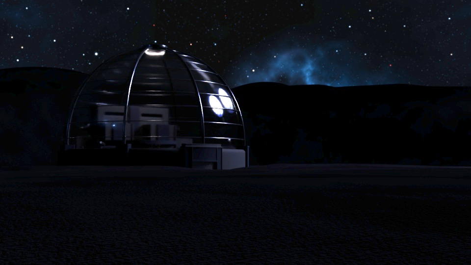
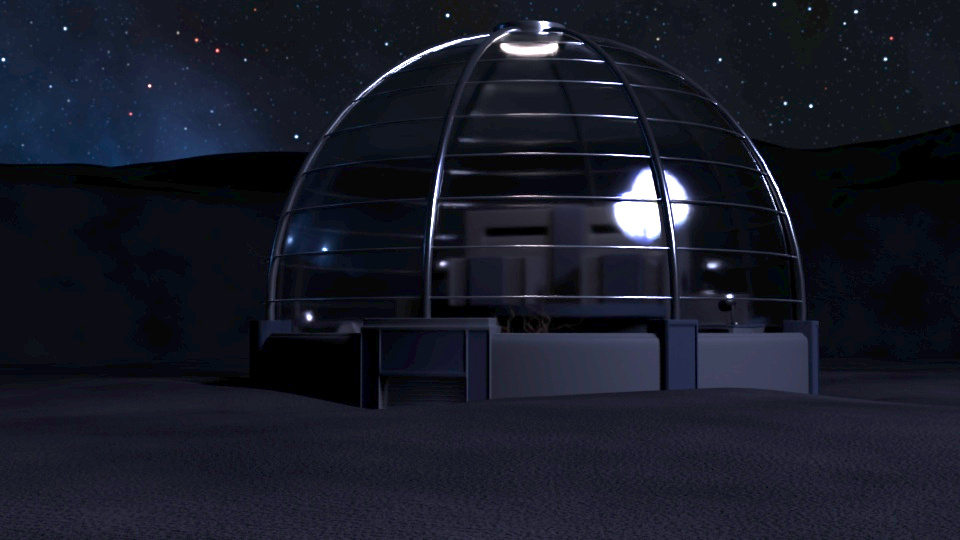
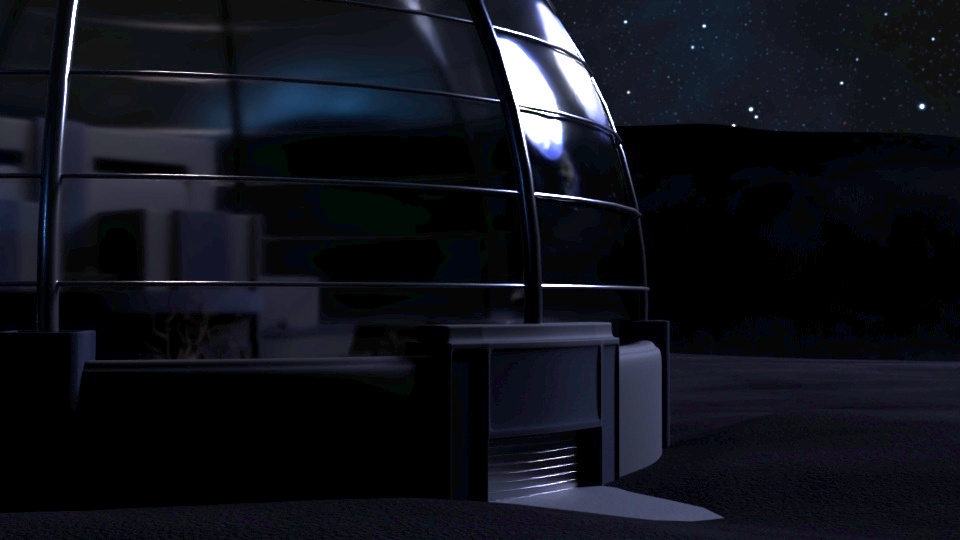
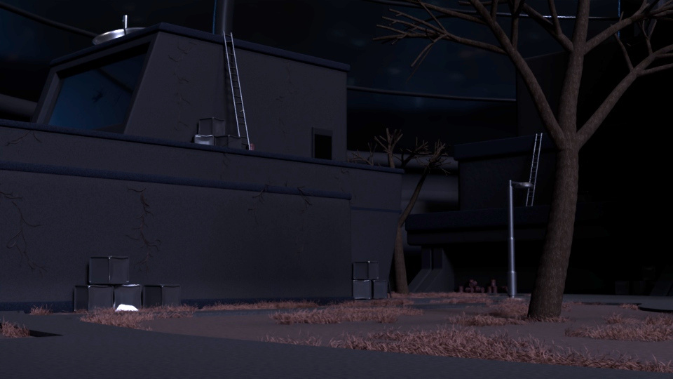
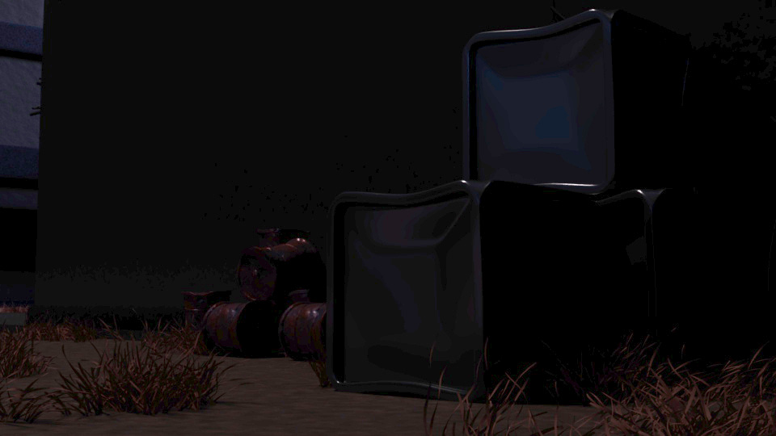
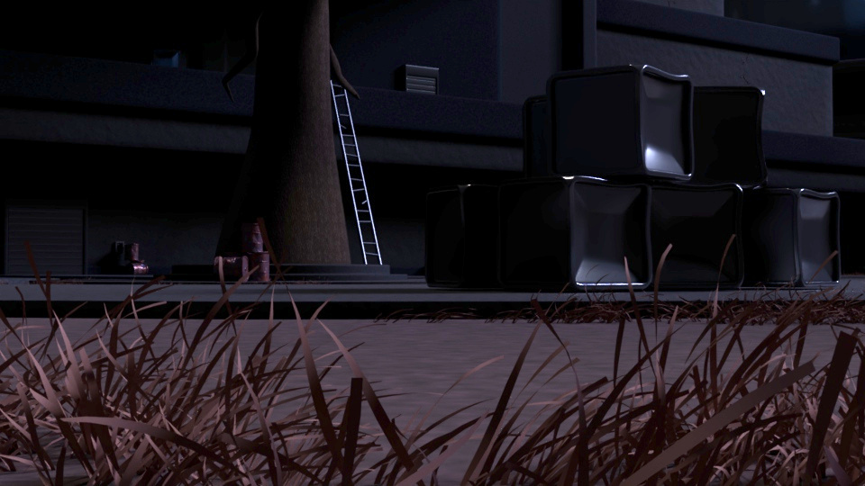
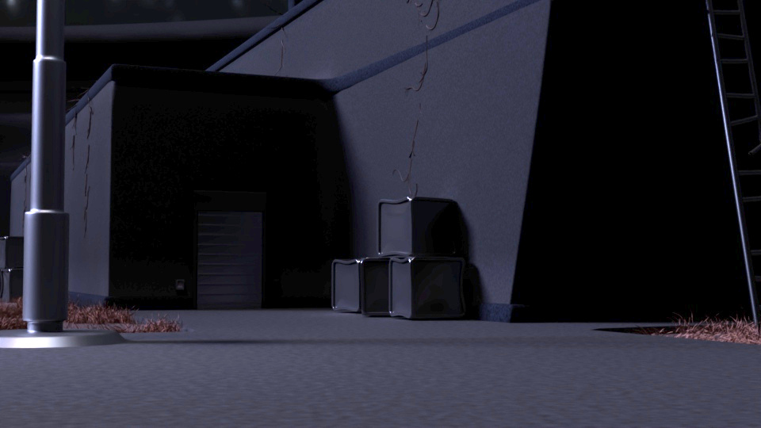
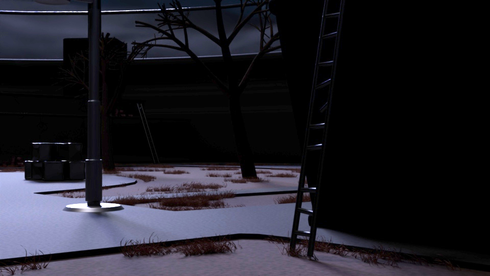
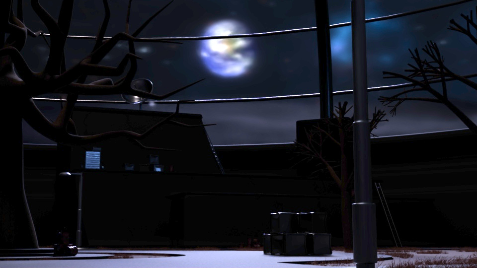
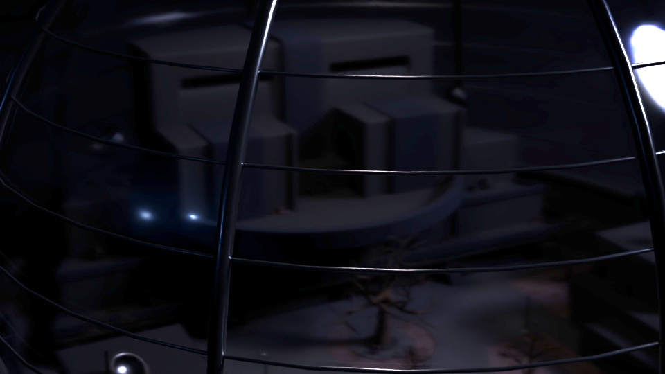
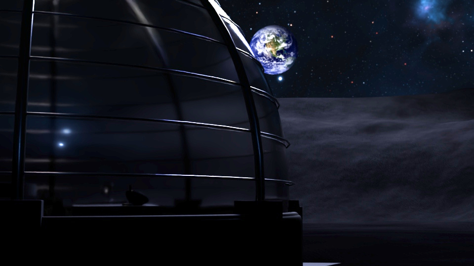
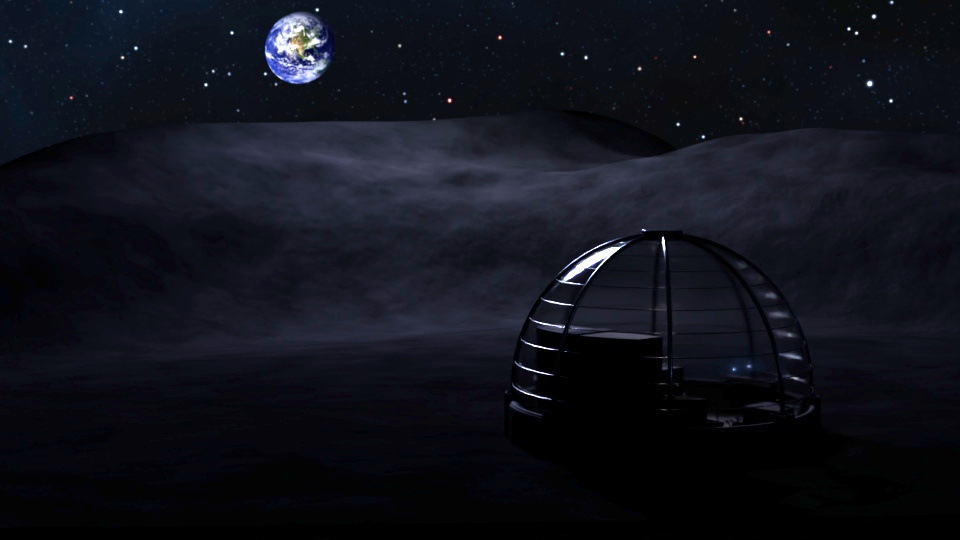
Far - Music Video
Music video for Corvus Echoes' unreleased song Far. Animated in Blender.
Collection of Animations
A series of hand-drawn 2D animations using Blender.

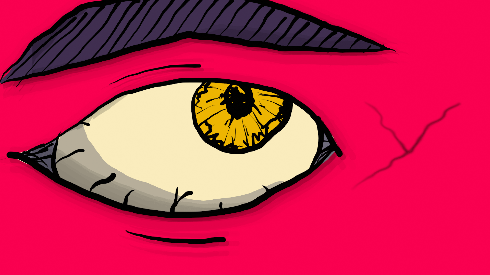
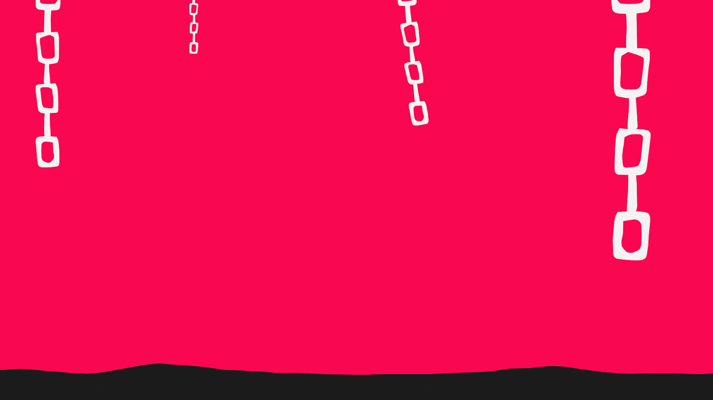
Realize - Lyric Video
Lyric video short for Corvus Echoes' song Realize. Made in After Effects.
Fading of Memory - Lyric Video
Full lyric video for Corvus Echoes' song Realize. Made in After Effects.
Minimal Website
https://minimalsounddesign.netlify.app/
A minimal low-bandwidth website created with only HTML and CSS.

Reflection
Though most of my professional work leans into UX and other various technical projects, studying New Media gave me a solid creative foundation that I carry into all of my work.